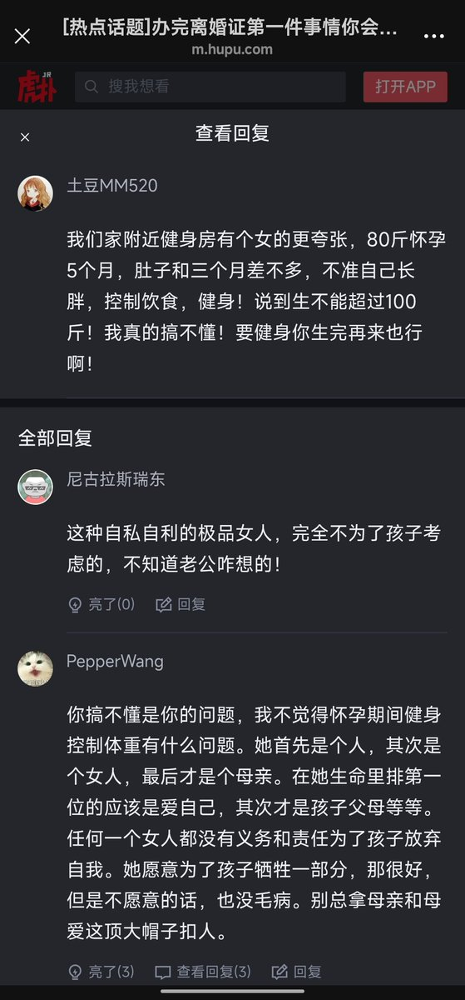

f hv
@fhv932189957574
查了一下
锻炼通常被认为对婴儿是安全的，并且通常有益。 有意减肥是一个不同的问题：主要指南仍然建议增加一些体重，而不是减肥
定期的适度活动不会增加健康怀孕中流产、早产或低出生体重的风险
主动节食减肥不是常规推荐
有证据支持的有控制运动可以防止体重过度增加，对母亲和婴儿都有好处。 刻意减肥节食不是标准建议。 个人建议取决于起始BMI、医疗状况、超声胎儿生长以及怀孕进展情况——因此，应与产前护理团队一起做出决定，而不是仅根据一般信息。

颜探长
@laoyan86
逆天宝妈怀孕还要强行控制体重，怀孕5个月体重只有80斤，下面集美洗白话术更逆天：“她首先是个人，其次是个女人，最后才是个母亲”
这时候又不谈母爱多伟大了？ https://t.co/ceTG7C06rv